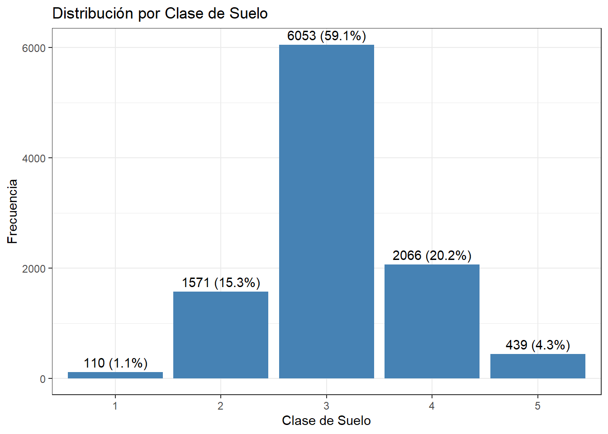
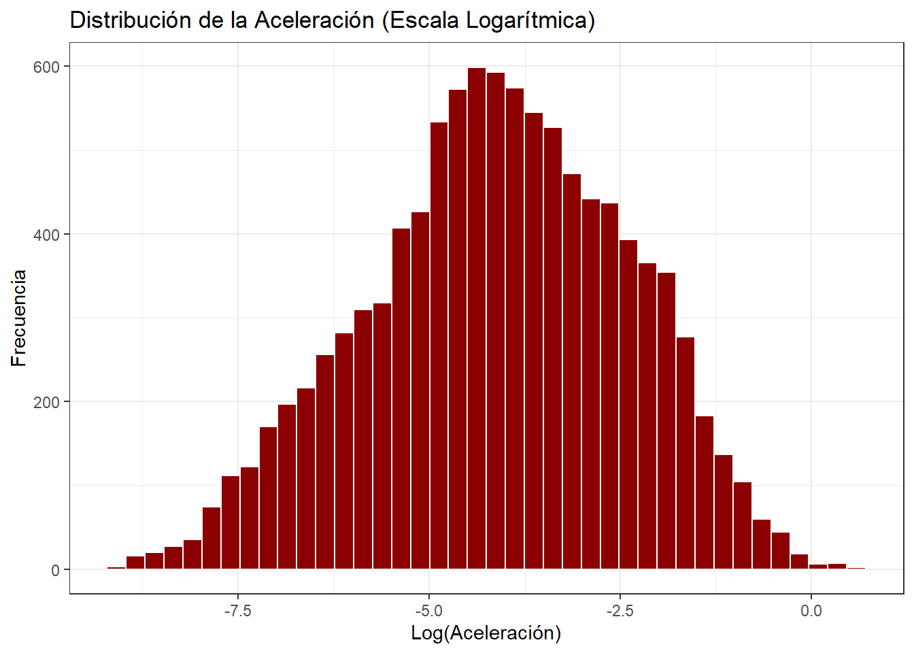
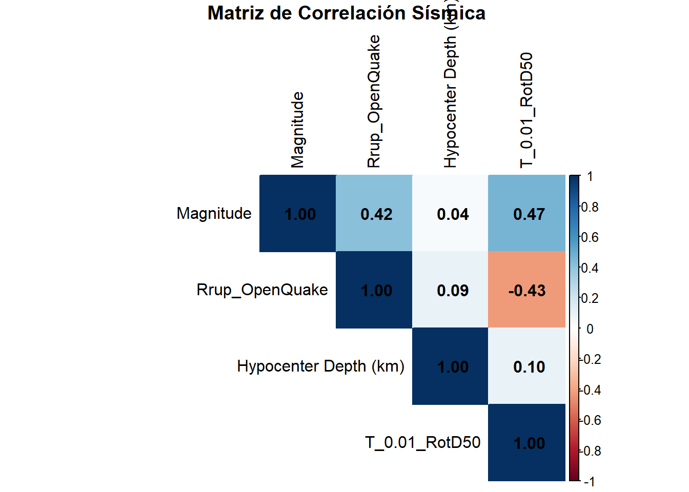
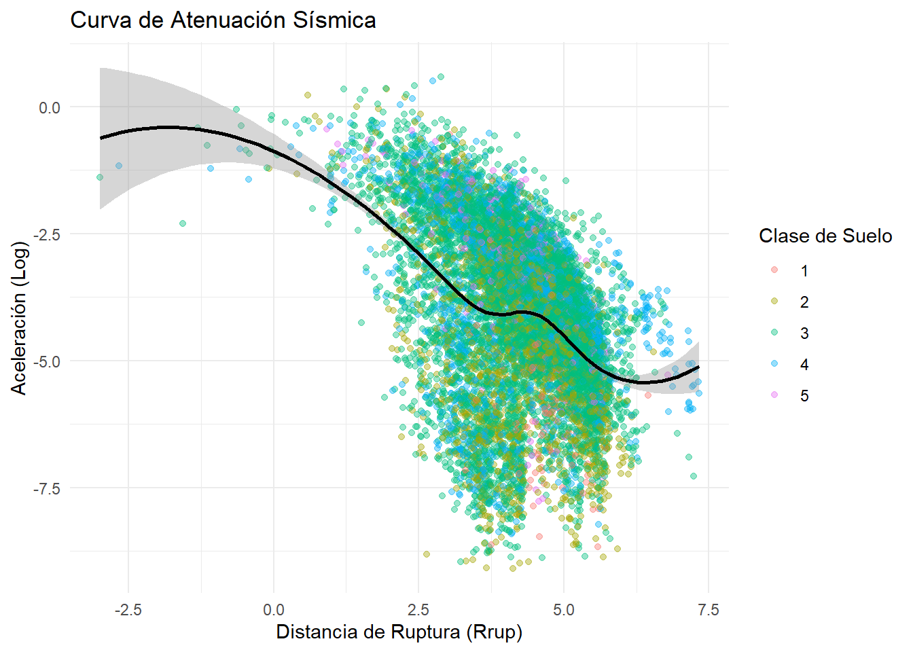
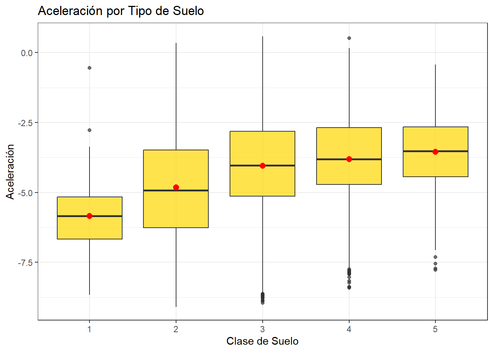
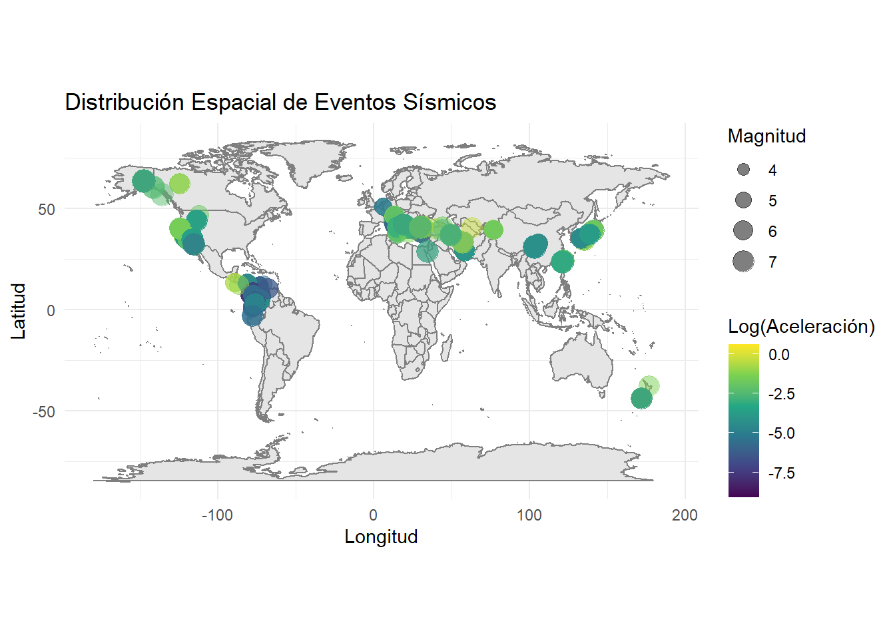
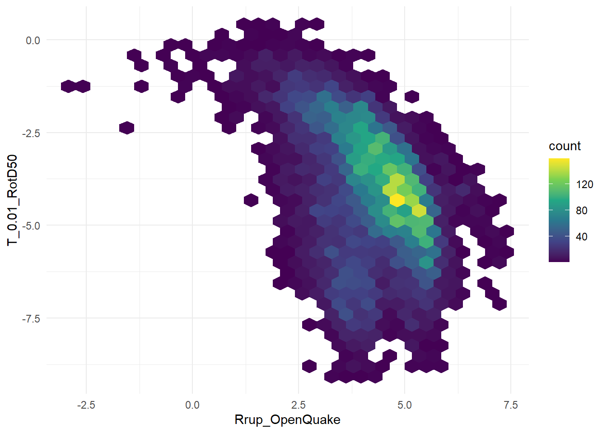

3 Graficos
datos %>%
count(Soil_Class) %>%
mutate(Porcentaje = (n / sum(n)) * 100) %>%
ggplot(aes(x = factor(Soil_Class), y = n)) +
geom_col(fill = "steelblue") +
geom_text(aes(label = paste0(n, " (", round(Porcentaje, 1), "%)")), vjust = -0.5) +
labs(title = "Distribución por Clase de Suelo", x = "Clase de Suelo", y = "Frecuencia") +
theme_bw()
Interpretación: Se observa que la mayoría de los registros sísmicos corresponden a la Clase de Suelo 3, representando más del 70% de los datos. Esto indica que el análisis está fuertemente influenciado por este tipo de suelo específico.
3.1 Visualización de variable continua (Aceleración)
ggplot(datos, aes(x = T_0.01_RotD50)) +
geom_histogram(bins = 40, fill = "darkred", color = "white") +
labs(title = "Distribución de la Aceleración (Escala Logarítmica)",
x = "Log(Aceleración)",
y = "Frecuencia") +
theme_bw()
library(dplyr)
library(moments)
resumen_log <- datos %>%
summarise(
n = n(),
media_log = mean(T_0.01_RotD50, na.rm = TRUE),
mediana_log = median(T_0.01_RotD50, na.rm = TRUE),
sd_log = sd(T_0.01_RotD50, na.rm = TRUE),
min_log = min(T_0.01_RotD50, na.rm = TRUE),
Q1_log = quantile(T_0.01_RotD50, 0.25, na.rm = TRUE),
Q3_log = quantile(T_0.01_RotD50, 0.75, na.rm = TRUE),
max_log = max(T_0.01_RotD50, na.rm = TRUE),
IQR_log = IQR(T_0.01_RotD50, na.rm = TRUE),
skewness_log = skewness(T_0.01_RotD50, na.rm = TRUE),
kurtosis_log = kurtosis(T_0.01_RotD50, na.rm = TRUE)
)
resumen_log## # A tibble: 1 × 11
## n media_log mediana_log sd_log min_log Q1_log Q3_log max_log IQR_log skewness_log
## <int> <dbl> <dbl> <dbl> <dbl> <dbl> <dbl> <dbl> <dbl> <dbl>
## 1 10239 -4.12 -4.08 1.70 -9.09 -5.25 -2.87 0.584 2.37 -0.173
## # ℹ 1 more variable: kurtosis_log <dbl>##Correlación de Variables Sísmicas
# Seleccionar variables clave para correlación
vars_sismicas <- datos %>%
select(Magnitude, Rrup_OpenQuake, `Hypocenter Depth (km)`, T_0.01_RotD50)
library(corrplot)## corrplot 0.95 loadedmatriz_cor <- cor(vars_sismicas, use = "complete.obs")
corrplot(matriz_cor, method = "color", addCoef.col = "black", type = "upper",
tl.col = "black", title = "\n Matriz de Correlación Sísmica")
##Visualización de Dispersión (Atenuación con Línea de Tendencia)
ggplot(datos, aes(x = Rrup_OpenQuake, y = T_0.01_RotD50)) +
geom_point(aes(color = factor(Soil_Class)), alpha = 0.4) +
geom_smooth(method = "loess", color = "black", se = TRUE) +
labs(title = "Curva de Atenuación Sísmica",
x = "Distancia de Ruptura (Rrup)",
y = "Aceleración (Log)",
color = "Clase de Suelo") +
theme_minimal()## `geom_smooth()` using formula = 'y ~ x'
3.2 Visualización de variable continua (Aceleración)
ggplot(datos, aes(x = factor(Soil_Class), y = T_0.01_RotD50)) +
geom_boxplot(fill = "gold", alpha = 0.7) +
stat_summary(fun = mean, geom = "point", shape = 20, size = 4, color = "red") +
labs(title = "Aceleración por Tipo de Suelo", x = "Clase de Suelo", y = "Aceleración") +
theme_bw()
Interpretación: La coincidencia cercana entre la media (punto rojo) y la mediana sugiere simetría relativa dentro de cada clase.
##Mapas de localizacion de eventos
ggplot(datos, aes(x = `Seismic Longitude`, y = `Seismic Latitude`)) +
borders("world", colour = "gray50", fill = "gray90") +
geom_point(aes(size = Magnitude, color = T_0.01_RotD50),
alpha = 0.5,
na.rm = TRUE) +
scale_color_viridis_c() +
coord_fixed(1.3) +
labs(title = "Distribución Espacial de Eventos Sísmicos",
x = "Longitud",
y = "Latitud",
size = "Magnitud",
color = "Log(Aceleración)") +
theme_minimal()## Warning: `borders()` was deprecated in ggplot2 4.0.0.
## ℹ Please use `annotation_borders()` instead.
## This warning is displayed once per session.
## Call `lifecycle::last_lifecycle_warnings()` to see where this warning was generated.
##Mapa de calor
ggplot(datos, aes(x = Rrup_OpenQuake, y = T_0.01_RotD50)) +
geom_hex() +
scale_fill_viridis_c() +
theme_minimal()
El mapa de calor hexbin revela una concentración predominante de registros en distancias logarítmicas intermedias (3.2–5.27) y aceleraciones logarítmicas entre -5.22 y -3.29, con una frecuencia máxima de 3165 observaciones en esta región.
La correlación negativa moderada (r = -0.43) y la covarianza negativa (-0.75) confirman el comportamiento de atenuación sísmica, donde la aceleración disminuye conforme aumenta la distancia a la ruptura.
La distribución espacial de densidad sugiere una tendencia descendente clara con dispersión considerable, consistente con la variabilidad inherente de los fenómenos sísmicos.